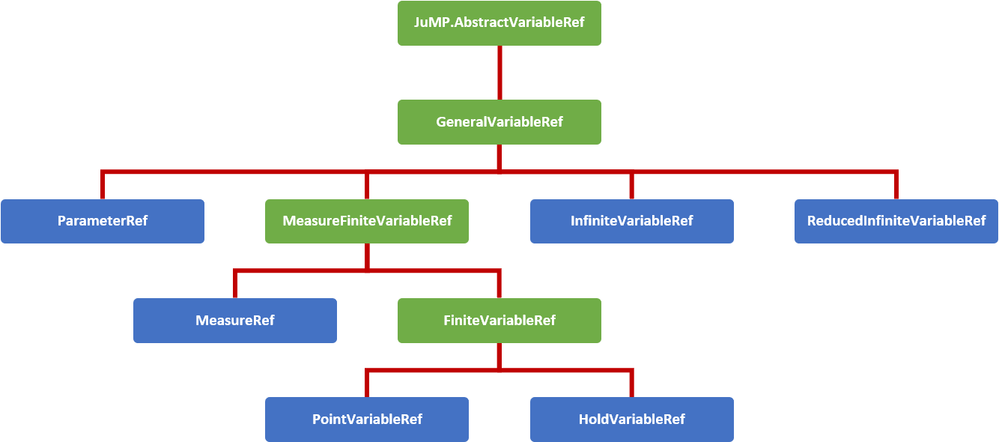

Expressions
A guide for the defining and understanding the variable expressions used in InfiniteOpt.
Overview
Expressions in InfiniteOpt (also called functions) refer to mathematical statements involving variables and numbers. Thus, these comprise the mathematical expressions used that are used in measures, objectives, and constraints. Programmatically, InfiniteOpt simply extends JuMP expression types and methods principally pertaining to affine and quadratic mathematical expressions. An natively supported abstraction for general nonlinear expressions is currently under development since that of JuMP is not readily extendable.
Datatype Hierarchy
Expressions employ variable reference types inherited from JuMP.AbstractVariableRef to form expression objects. InfiniteOpt uses a hierarchy of such types to organize the complexities associated with modeling infinite dimensional programs. The figure below summarizes this hierarchy of variable reference types where the abstract types are depicted in green and the concrete types are shown blue.

Following JuMP, expression objects are parameterized by the variable reference type that is present in the expression. In InfiniteOpt expressions automatically, select the most specific variable reference type possible in accordance with the above figure. For instance, an expression that only contains hold variables will be classified as a HoldVariableRef expression object, whereas an expression containing hold variables and a measure would be classified as a MeasureFiniteVariableRef expression object. This hierarchical classification becomes convenient to guide infinite program reformulation schemes in how to treat different expressions. The default transcription methodology employed by InfiniteOpt.TranscriptionOpt uses these classifications to efficiently differentiate between finite and infinite expressions.
Affine Expressions
An affine expression pertains to a mathematical function of the form:
where $x \in \mathbb{R}^n$ denote variables, $a \in \mathbb{R}^n$ denote coefficients, and $b \in \mathbb{R}$ denotes a constant value. Such expressions, are prevalent in any problem than involves linear constraints and/or objectives.
In InfiniteOpt, affine expressions can be defined directly using Julia's arithmetic operators (i.e., +, -, *, etc.) or using @expression. For example, let's define the expression $2y(t) + z - 3t$ noting that the following methods are equivalent:
julia> @infinite_parameter(model, t in [0, 10])
t
julia> @infinite_variable(model, y(t))
y(t)
julia> @hold_variable(model, z)
z
julia> expr = 2y + z - 3t
2 y(t) + z - 3 t
julia> expr = 2 * y + z - 3 * t
2 y(t) + z - 3 t
julia> expr = @expression(model, 2y + z - 3t)
2 y(t) + z - 3 t
julia> typeof(expr)
GenericAffExpr{Float64,GeneralVariableRef}Notice that coefficients to variables can simply be put alongside variables without having to use the * operator. Also, note that all of these expressions are stored in a container referred to as a GenericAffExpr which is a JuMP object for storing affine expressions. Furthermore, this object is parameterized by GeneralVariableRef since it is the lowest common variable reference type in common between hold variables and infinite variables.
Where possible, it is preferable to use @expression for defining expressions as it is much more efficient than explicitly using the standard operators.
GenericAffExpr objects contain 2 fields which are:
constant::CoefTypeThe constant value of the affine expression.terms::OrderDict{VarType, CoefType}A dictionary mapping variables to coefficients.
For example, let's see what these fields look like in the above example:
julia> expr.terms
OrderedCollections.OrderedDict{GeneralVariableRef,Float64} with 3 entries:
y(t) => 2.0
z => 1.0
t => -3.0
julia> expr.constant
0.0Notice that the ordered dictionary preserves the order in which the variables appear in the expression.
More information can be found in the documentation for affine expressions in JuMP.
Quadratic Expressions
A quadratic function pertains to a mathematical function of the form:
where $x \in \mathbb{R}^n$ are the variables, $f_a(x): \mathbb{R}^n \mapsto \mathbb{R}$ is an affine function, and $m = n(n+1)/2$ is the number of unique combinations of variables $x$. Like affine expressions, quadratic expressions can be defined via Julia's arithmetic operators or via @expression. For example, let's define $2y^2(t) - zy(t) + 42t - 3$ using the following equivalent methods:
julia> expr = 2y^2 - z * y + 42t - 3
2 y(t)² - z*y(t) + 42 t - 3
julia> expr = @expression(model, 2y^2 - z * y + 42t - 3)
2 y(t)² - z*y(t) + 42 t - 3
julia> typeof(expr)
GenericQuadExpr{Float64,GeneralVariableRef}Again, notice that coefficients need not employ *. Also, the object used to store the expression is a GenericQuadExpr which is a JuMP object used for storing quadratic expressions. Again, this expression container is parameterized by GeneralVariableRef since that is the common variable reference type between the hold variable z and the infinite variable y(t).
GenericQuadExpr object contains 2 data fields which are:
aff::GenericAffExpr{CoefType,VarType}An affine expressionterms::OrderedDict{UnorderedPair{VarType}, CoefType}A dictionary mapping quadratic variable pairs to coefficients.
Here the UnorderedPair type is unique to JuMP and contains the fields:
a::AbstractVariableRefOne variable in a quadratic pairb::AbstractVariableRefThe other variable in a quadratic pair.
Thus, this form can be used to store arbitrary quadratic expressions. For example, let's look at what these fields look like in the above example:
julia> expr.aff
42 t - 3
julia> typeof(expr.aff)
GenericAffExpr{Float64,GeneralVariableRef}
julia> expr.terms
OrderedCollections.OrderedDict{UnorderedPair{GeneralVariableRef},Float64} with 2 entries:
UnorderedPair{GeneralVariableRef}(y(t), y(t)) => 2.0
UnorderedPair{GeneralVariableRef}(z, y(t)) => -1.0Notice again that the ordered dictionary preserves the order.
Polynomial expressions can be represented by introducing dumby variables and nested quadratic/affine expressions. For instance, $z^3 + 2$ can be expressed by introducing a dumby variable $x = z^2$:
julia> @hold_variable(model, x)
x
julia> @constraint(model, x == z^2)
-z² + x = 0.0
julia> expr = @expression(model, z * x + 2)
z*x + 2More information can be found in the documentation for quadratic expressions in JuMP.
Nonlinear Expressions
General nonlinear expressions as generated via @NLexpression and similar methods in JuMP are not yet extended for InfiniteOpt. This is because JuMP no longer readily supports nonlinear extensions, but a native nonlinear implementation is currently under development and should be released in the near future.